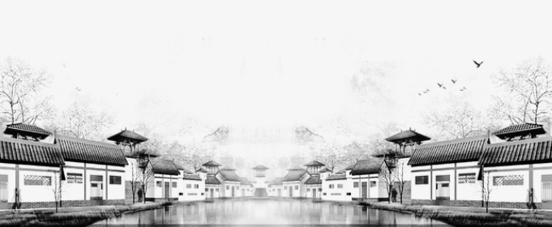

水墨江南
作者：陌上花开 2017-06-15
江南如诗如画，一山一水，旖旎人家，浅墨清韵，何处飞花，碧水飘萍，沉落烟霞，水墨江南。
我穿行于水乡的灰墙白瓦间，不由的想起“江南水乡展旖旎，屋衍风铃声悦耳”这句诗，仿佛在一呼一吸的间隙间都充满了江南独有的气息。
置身于江南的亭台水榭，倘徉在小桥流水，垂条烟柳曳痕，走过一树一树的花开，桂花香了鼻尖，仿若薄雾轻拢纱，氤氲成一幅素雅的丹青水墨画，似风若沙，飘入空灵澄澈的梦境。睡莲呢喃，微雨湿了窗棂。曾几何时，文人墨客一袭长袖青衫，在幽径徘徊，提笔描写着风雅，着墨记载着年华。就如戴望舒《雨巷》所写的“撑着油纸伞，独自彷徨在悠长、悠长又寂寥的雨巷”。
江南的美，是朦胧而古朴的，是树下悠然的下棋，是花间醉然品酒，是庭中淡然品茶。绿水萦绕着白墙，红花洒落于青瓦，蜿蜒曲回的小河在清晨和夕阳中浅吟低唱。乘一叶扁舟撑一支蒿，穿行在青山绿水中，两岸是历经风浪的班驳和亘古柔情的飘零，一泓清水所承载的，是似水流年的痕迹和沧桑。
雪月风花，轻抚琵琶，弹不断千丝岁月。月下独酌，波澜不惊，玉潔渊清。曲终，霓裳迎风舞，散尽一世风华。江南静谧，悠闲，是城市喧嚣纷扰中的一带洞天幽境，吴侬软语，江南丝竹，绘出一幅水墨江南。
寥寥几笔勾勒，便把江南的花语鸟啼、绿风清歌，遣倦过几度晚钟晨吟，在一卷漾漫江南气息的宋词里浅浅绽放，在一张萦绕江南旖旎的宣纸上缓缓流淌，水墨江南，倾尽天下。
上一篇:
相约有期，携一世痴狂
下一篇：
一瓣落雪，一世馨香
雨巷
戴望舒
撑着油纸伞，独自
彷徨在悠长、悠长
又寂寥的雨巷，
我希望逢着
一个丁香一样的
结着愁怨的姑娘。
她是有
丁香一样的颜色，
丁香一样的芬芳，
丁香一样的忧愁，
在雨中哀怨，
哀怨又彷徨；
她彷徨在寂寥的雨巷，
撑着油纸伞
像我一样，
像我一样地
默默踟躇着
冷漠、凄清，又惆怅。
她默默地走近，
走近，又投出
太息一般的眼光
她飘过
像梦一般地，
像梦一般地凄婉迷茫。
彷徨在悠长、悠长
又寂寥的雨巷，
我希望逢着
一个丁香一样的
结着愁怨的姑娘。
她是有
丁香一样的颜色，
丁香一样的芬芳，
丁香一样的忧愁，
在雨中哀怨，
哀怨又彷徨；
她彷徨在寂寥的雨巷，
撑着油纸伞
像我一样，
像我一样地
默默踟躇着
冷漠、凄清，又惆怅。
她默默地走近，
走近，又投出
太息一般的眼光
她飘过
像梦一般地，
像梦一般地凄婉迷茫。